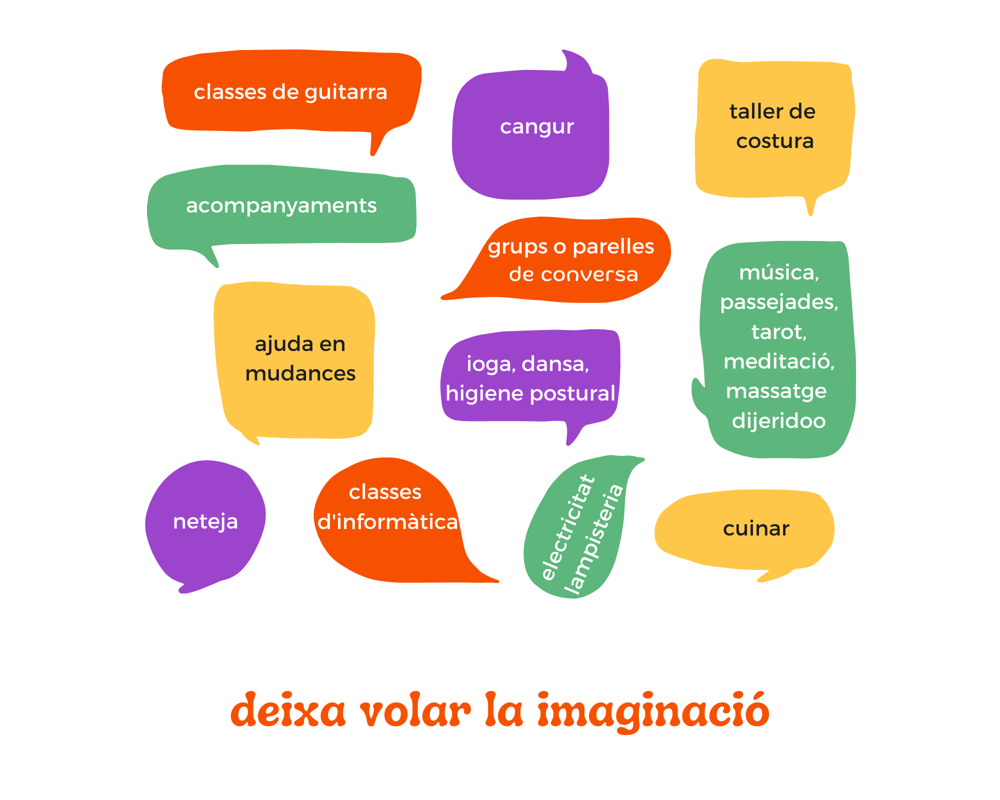

Com
a usuari/a del BdT hauràs d'oferir les teves hores
realitzant algún servei o activitat que tu decideixis.
També podràs rebre hores dels serveis, tallers o activitats que
t'interessin.
Pots oferir el que tu vulguis. Qualsevol cosa que
pensis que t'agradaria compartir amb altres persones perque penses que pot
resultar útil, o divertit, o interessant, o simplement perquè t'agrada i ho
vols oferir. Alguns exemples:

Podràs rebre qualsevol de les activitats, serveis,
tallers, etc, que ofereixin les altres persones del banc del temps. Per
tant, quantes més persones formem part del banc del temps més varietat i més
possibilitat de trobar el que necessitem o ens ve de gust.
Primer de tot t'has de donar d'alta com a usuari/a
del BdT. Això ho fem presencialment a l'espai de secretaria.
Un cop
t'has donat d'alta comptem amb un programa desenvolupat i
cedit per
l'Associació de Bancs de Temps (ABdT)
que es diu
Timeoverflow i que s'assembla molt al
les aplicacions de gestió de comptes dels bancs, amb la diferència que
amb aquest el que gestionem és temps i no diners.
Amb el Timeoverflow també accedim a totes les ofertes i demandes del
banc del temps i al contacte dels diferents membres per a poder
sol·licitar el seu temps i que ens el sol·licitin a nosaltres.
Si Prefereixes tractar amb persones abans que amb el programa pots venir
a la secretaria
del banc del temps.
El Banc del Temps necessita un grup de persones que s'encarreguin de totes les tasques
relacionades amb la organització així com de prendre les decisions que es presentin de forma
consensuada.
Aquestes tasques inclourien la convocatòria i gestió de tallers, de les activitats, de les
trobades del BdT, de la secretaria, etc.
Sense grup gestor el BdT no pot funcionar, t'animes?
Et necessitem!
Les persones de la secretaria s'encarreguen de fer les altes de nous membres, de gestionar
amb l'aplicació Timeoverflow l'intercanvi d'hores de les persones que no ho facin des de
casa, de contestar consultes i emails sobre el banc del temps, etc.
Que no saps fer res de tot això?
No et preocupis, si tens capacitat per fer servir l'ordinador a nivell d'usuari només és
qüestió de que et familiaritzis amb el Timeoverflow, t'ajudarem a fer-ho.
LES HORES QUE INVERTEIXES EN SECRETARIA LES COBRES I SE SUMEN AL TEU SALDO DEL BdT
Sense secretaria el BdT no pot funcionar, t'animes?
Et necessitem!